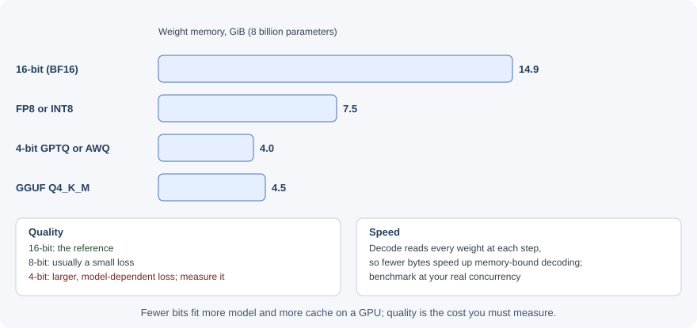

GPU Capacity and Scaling¶
Self-hosting a model turns capacity planning into GPU arithmetic. Will the model fit on one card? How many conversations can it hold at once? How much does 4-bit quantization buy, and what does it cost in quality? How long does a new replica take to start, and what should trigger it? This lesson sizes GPU memory from first principles (weights plus KV cache plus runtime overhead) with a calculator you can run, explains the quantization formats you will meet (FP8, INT8, 4-bit GPTQ and AWQ, and GGUF), and shows how to autoscale model servers on Kubernetes when every new replica needs minutes to become ready. It closes with the hosted GPU options and how their costs compare.
The serving engines themselves are covered in serving open models; this lesson is about the hardware and the fleet underneath them.
Why it matters¶
GPUs are the most expensive and the least elastic part of an AI stack. A GPU you size too small cannot load the model, or runs it with so little cache that requests queue and preempt each other. A GPU you size too large, or keep running idle at night, costs the same every hour as a busy one. Unlike web servers, model servers cannot be added in seconds: a new replica may need a new GPU node, a multi-gigabyte image, tens of gigabytes of weights, and a warm-up, so an autoscaler that reacts late leaves users waiting for minutes.
The numbers are knowable in advance. Weights take parameters times bytes per parameter; the KV cache takes a fixed number of bytes per token that follows from the model's shape; the rest is overhead you can measure once. Doing this arithmetic before buying or reserving capacity prevents the two classic mistakes: a model that does not fit, and a model that fits but serves only three users at a time.
Real-world usage¶
- vLLM memory settings. The
vLLM engine arguments
define
--gpu-memory-utilizationas "the fraction of GPU memory to be used for the model executor", a per-instance limit, and add--kv-cache-memory-bytesfor setting the cache size directly. At startup vLLM logs its KV cache size in tokens and the "Maximum concurrency" for the configured context length, which is the number to compare with your estimate. - GPTQ. Frantar and colleagues, GPTQ: Accurate Post-Training Quantization for Generative Pre-trained Transformers, quantize models of 175 billion parameters "in approximately four GPU hours, reducing the bitwidth down to 3 or 4 bits per weight, with negligible accuracy degradation", with inference speedups of around 3.25x on high-end GPUs.
- AWQ. Lin and colleagues, AWQ: Activation-aware Weight Quantization for LLM Compression and Acceleration, protect the small share of weights that matter most to activations and report a 4-bit inference framework with "more than 3x speedup over the Huggingface FP16 implementation".
- LLM.int8(). Dettmers and colleagues, LLM.int8(): 8-bit Matrix Multiplication for Transformers at Scale, show 8-bit inference that "cut the memory needed for inference by half while retaining full precision performance".
- Tooling status (November 2026). The AutoAWQ README states that "AutoAWQ is officially deprecated and will no longer be maintained" and that it "has been adopted by the vLLM Project" in LLM Compressor; the AutoGPTQ repository is archived, and vLLM's quantization documentation lists GPTQModel instead.
- KEDA. The KEDA Prometheus scaler scales a workload on the result of any PromQL query, which is how GPU servers scale on queue length instead of CPU.
Popular tools and providers: vLLM and SGLang (FP8, AWQ, GPTQ, and
compressed-tensors models), LLM Compressor and GPTQModel for producing
quantized checkpoints, llama.cpp's llama-quantize for GGUF files,
bitsandbytes for 4-bit and 8-bit loading in Transformers, the NVIDIA GPU
Operator on Kubernetes, KEDA and Prometheus for autoscaling, and GPU
capacity from cloud providers, GPU clouds, and serverless GPU platforms.
How it works¶
What fills GPU memory¶
![Diagram: four stacked bars of GPU memory, treating GPU sizes as GiB; an 8B model in 16-bit on a 24 GB GPU uses 14.9 GiB for weights, 2 GiB for runtime, and leaves 4.7 GiB of KV cache, about 4.7 conversations at 8K tokens, plus a 10% reserve; the same model with 4-bit weights uses 4.0 GiB for weights and leaves 15.6 GiB of cache, about 15.6 conversations; on an 80 GB GPU the 16-bit 8B model leaves 55.1 GiB of cache, about 55 conversations; a 70B model with 4-bit weights and an FP8 cache uses 35.5 GiB for weights on one 80 GB GPU and leaves 34.5 GiB of cache, about 27.6 conversations.](../gpu-memory-budget.svg)
Serving memory has four parts:
GPU memory used = weights + KV cache + runtime (activations, CUDA graphs, workspace)
+ whatever the engine leaves free (vLLM's utilization setting)
weights = parameters x bytes per parameter (+ ~5-10% for scales in 4-bit formats)
KV cache = bytes per token x tokens held by all active sequences
bytes per token = 2 x layers x kv_heads x head_dim x bytes per cache value
8B shape: 32 layers, 8 KV heads, head_dim 128 -> 128 KiB per token at 16 bits
70B shape: 80 layers, 8 KV heads, head_dim 128 -> 320 KiB per token at 16 bits
The weights are a fixed cost per replica. The KV cache is what turns into concurrency: whatever memory remains after weights and runtime holds the cache, and the cache divided by the context each conversation uses is how many conversations fit at once. Grouped-query attention (several query heads sharing one key-value head, as in the shapes above) is why modern models need far less cache than older ones with as many KV heads as query heads.
Concurrency is about actual tokens, not configured maximums. Engines with paged caches allocate blocks as tokens arrive, so a server whose conversations average 2,000 tokens holds about four times as many of them as the "full 8K context" numbers suggest, until a burst of long conversations fills the cache and preemptions start.
Running the numbers¶
The calculator in the practical examples produces this table (planning numbers; the engine's startup log is the ground truth):
model weights kv GPU weights GiB KiB/token KV GiB 8K seqs
8b bf16 bf16 1x24GB 14.9 128 4.7 4.7
8b int4 bf16 1x24GB 4.0 128 15.6 15.6
8b bf16 fp8 1x24GB 14.9 64 4.7 9.4
8b bf16 bf16 1x80GB 14.9 128 55.1 55.1
70b bf16 bf16 1x80GB 131.5 320 -61.5 no fit
70b bf16 bf16 2x80GB 131.5 320 8.5 3.4
70b int4 fp8 1x80GB 35.5 160 34.5 27.6
The table holds the main decisions of GPU sizing:
- An 8B model in 16-bit runs on a 24 GB card, but holds fewer than five full-length conversations. Fine for a developer server, not for TaskFlow's production traffic.
- 4-bit weights free 11 GiB on the same card, more than tripling the cache. An FP8 cache halves bytes per token, doubling concurrency without touching the weights.
- A 70B model in 16-bit does not fit one 80 GB GPU. Two GPUs with tensor parallelism fit it but leave little cache. With 4-bit weights and an FP8 cache, one GPU holds the model and about 28 full-length conversations, traded against the quality loss of quantization, which you must measure.
Decode speed and memory bandwidth¶
Decoding is limited by memory bandwidth: every step reads the weights (and each sequence's cache) from GPU memory. A rough upper bound for one sequence alone:
steps per second <= memory bandwidth / bytes read per step
16 GB of weights on a GPU with 2 TB/s of bandwidth: <= 125 steps/s at batch size 1
the same model in 4-bit (about 4.3 GB): <= 465 steps/s at batch size 1
Real numbers are lower, but the ratio explains two things. Quantization speeds up decoding even when memory is not short, because fewer bytes move per step. And batching is nearly free at small batch sizes: one weight read serves every sequence in the step, which is why continuous batching multiplies throughput. As batches grow, the work becomes compute-bound and those gains level off, so benchmark at your real concurrency.
Quantization formats¶
| Format | Bits per weight | Where it runs | Notes |
|---|---|---|---|
| BF16 / FP16 | 16 | Any modern GPU | The usual reference format; best quality |
| FP8 (weights and activations) | 8 | GPUs with FP8 support (vLLM lists Ada and Hopper and newer) | Small quality loss on most models; fast on supported hardware; also used for the KV cache |
| INT8 (W8A8 or weight-only) | 8 | Most GPUs | SmoothQuant-style W8A8 or LLM.int8(); halves weight memory |
| GPTQ | 3-4 (usually 4) | GPUs via vLLM, SGLang, Transformers | Post-training, uses calibration data; produce with GPTQModel or LLM Compressor |
| AWQ | 4 | GPUs via vLLM, SGLang | Activation-aware; produce with LLM Compressor (AutoAWQ is deprecated) |
| bitsandbytes NF4 / INT8 | 4 or 8 | Transformers, vLLM | Quantizes at load time; common for QLoRA fine-tuning |
| GGUF (for example Q8_0, Q5_K_M, Q4_K_M) | about 4.5-8.5 | llama.cpp, Ollama, LM Studio; CPUs, Apple silicon, GPUs | Single-file format; Hugging Face documents Q4_K at 4.5 bits per weight |

Three rules keep quantization safe:
- Measure quality on your tasks. Run TaskFlow's evaluation sets (task-creation accuracy, Q&A faithfulness) on the quantized model before switching; general benchmark scores hide task-specific regressions, especially in long-context and structured-output tasks (see building evaluation sets).
- Prefer published, reputable quantized checkpoints or produce your own with maintained tools; check that the engine version supports the exact format.
- Quantize the cache separately. An FP8 KV cache
(
--kv-cache-dtype fp8in vLLM) doubles concurrency at a small quality cost and is independent of weight quantization.
More than one GPU¶
When a model does not fit one GPU, engines split it:
- Tensor parallelism splits each layer across GPUs in one server
(
--tensor-parallel-size 2in vLLM). It needs fast GPU-to-GPU links, and each GPU holds a share of the weights and of the cache. - Pipeline parallelism places different layers on different GPUs or nodes. It reaches larger models but adds latency between stages.
- Data parallelism (more replicas) is how you add throughput once one replica fits.
Splitting a model buys fit, not efficiency: two GPUs running one 70B replica at 16 bits held about 3 full-length conversations in the table above. Often a quantized model on one GPU per replica, scaled out with more replicas, serves more users per GPU.
Autoscaling model servers¶
Model servers need different autoscaling than web servers:
- Scale on queue and cache signals. CPU usage is meaningless and GPU
utilization saturates early. Use the engine's metrics: requests waiting
(
vllm:num_requests_waiting), KV cache usage (vllm:kv_cache_usage_perc), or measured TTFT p95. - Scale out early, scale in slowly. A new replica takes minutes, so trigger on a modest queue and keep headroom; scale in only after a long stabilization window, and drain in-flight generations first.
- Scale to zero only where cold starts are acceptable. Internal batch jobs can wait minutes; the interactive Assistant cannot. Keep at least one warm replica for interactive features.
![Diagram: two timelines of starting a model replica, with illustrative timings; on the cold path, provisioning a new GPU node takes about 4 minutes, pulling the multi-gigabyte engine image 2 minutes, downloading the weights 3 minutes, loading them onto the GPU 1 minute, and warm-up 1 minute, so the replica is ready after about 11 minutes; on the warm path, the node is already running with the image cached and the weights on local disk, so loading and warm-up take about 2 minutes; mitigations listed are warm minimum replicas, pre-pulled images, cached or streamed weights, and scaling on queue length before users wait.](../model-replica-cold-start.svg)
A cold start is a chain of slow steps, and each has a fix:
| Step | Why it is slow | Fix |
|---|---|---|
| GPU node provisioning | GPUs are scarce; nodes take minutes to boot and join | Keep a warm node, reserve capacity, use node pools with minimum size |
| Image pull | Engine images are several gigabytes | Pre-pull or bake into the node image; pin tags |
| Weight download | Tens of gigabytes per model | Model cache on a persistent volume or local NVMe; avoid downloading at startup |
| Load to GPU | Read and copy the weights | Fast local disk; streaming loaders such as vLLM's --load-format runai_streamer |
| Warm-up | Kernel compilation, CUDA graph capture | Keep it, but exclude it from readiness only with a startup probe |
Spot (preemptible) GPUs cost much less and fit batch work and extra replicas, but they can disappear: AWS gives a two-minute interruption notice, and Google Cloud's default notice for Spot VMs is shorter. Never put all interactive capacity on spot.
Hosted GPU options¶
![Diagram: four hosting options arranged from least to most control; per-token APIs for open models have no idle cost and the least operations work but the least control; serverless GPU containers bill per second and scale to zero but have cold starts; managed model endpoints run your chosen model on provider-managed instances billed while running; GPU virtual machines or Kubernetes node pools cost the least per GPU-hour at high utilization, especially reserved or spot, but you operate everything and pay while idle; a note says the cheapest option depends on utilization: idle-free options win for spiky traffic, reserved GPUs win for steady high load.](../gpu-hosting-options.svg)
| Option | Examples | Pays for idle time? | Relative cost per unit of work | Operations work |
|---|---|---|---|---|
| Per-token API for open models | Inference providers that host open-weight models | No | Low at low or spiky volume; higher than your own busy GPUs at sustained volume | Lowest |
| Serverless GPU containers | Cloud Run with GPUs, Azure Container Apps serverless GPUs, Modal, RunPod Serverless | No (scale to zero) | Higher per GPU-second than VMs; nothing while idle; cold starts | Low |
| Managed model endpoints | Amazon SageMaker AI endpoints, Hugging Face Inference Endpoints, cloud AI platforms' managed compute | Yes, while running | Above raw VMs; you pay for management | Medium |
| GPU VMs and Kubernetes node pools | EC2 accelerated instances, Compute Engine GPUs, Azure GPU VMs, EKS, GKE, AKS | Yes | Lowest per GPU-hour at high utilization, lower still when reserved, lowest on spot | Highest |
| GPU clouds | Specialized GPU providers with VMs and Kubernetes | Yes | Often below hyperscaler on-demand prices; fewer surrounding services | High |
Choose by utilization and control. TaskFlow's sensible path is a hosted API first, a serverless GPU or managed endpoint for an open model when privacy requires it at low volume, and a reserved GPU node pool only once steady traffic keeps the GPUs busy. The arithmetic is in cost optimization for LLM apps, and the general cloud cost levers in cost optimization and cloud bills.
When to use and when not to use¶
| Situation | Choose | Avoid |
|---|---|---|
| 8B-class model, few users, one card | 16-bit weights on a 24 GB GPU | Promising production concurrency from it |
| More concurrency on the same GPU | FP8 KV cache, then 4-bit weights after evaluation | Raising --max-num-seqs without cache to back it |
| Model too large for one GPU | Quantize first; tensor parallelism if quality requires 16-bit | Pipeline parallelism across slow networks for interactive use |
| Interactive traffic with daily peaks | Warm minimum replicas plus queue-based scale-out | Scale to zero for interactive features |
| Offline batch inference | Spot GPUs or scale-to-zero serverless GPUs | Reserved capacity sized for the batch peak |
| Laptop, CPU, or edge | GGUF with llama.cpp or Ollama | Data-center formats that need GPU kernels |
| Steady, high utilization | Reserved GPU nodes | Per-second serverless pricing |
Practical examples¶
Estimating memory and concurrency¶
# scripts/vram_estimate.py
"""Estimate GPU memory and concurrency for serving a decoder-only model.
Rough planning numbers only: confirm with the engine's startup log, which
reports the real KV cache size. Shapes come from the model's config.json
(num_hidden_layers, num_attention_heads, num_key_value_heads, hidden_size,
optional head_dim); the parameter count comes from the model card.
"""
import argparse
import json
GIB = 1024**3
BYTES = {"fp16": 2.0, "bf16": 2.0, "fp8": 1.0, "int8": 1.0, "int4": 0.5}
def kv_bytes_per_token(cfg: dict, kv_dtype: str) -> float:
heads = cfg["num_attention_heads"]
kv_heads = cfg.get("num_key_value_heads", heads) # fewer with grouped-query attention
head_dim = cfg.get("head_dim") or cfg["hidden_size"] // heads
return 2 * cfg["num_hidden_layers"] * kv_heads * head_dim * BYTES[kv_dtype]
def estimate(cfg: dict, params_b: float, weight_dtype: str, kv_dtype: str,
gpu_gib: float, gpus: int = 1, context: int = 8192,
mem_fraction: float = 0.9, runtime_gib_per_gpu: float = 2.0) -> dict:
# 4-bit formats also store scales and zero points: add about 8%
overhead = 1.08 if weight_dtype == "int4" else 1.0
weights = params_b * 1e9 * BYTES[weight_dtype] * overhead
usable = gpus * gpu_gib * GIB * mem_fraction
runtime = gpus * runtime_gib_per_gpu * GIB # activations, CUDA graphs, workspace
kv_budget = usable - weights - runtime
per_token = kv_bytes_per_token(cfg, kv_dtype)
tokens = max(0.0, kv_budget / per_token)
return {
"weights_gib": weights / GIB,
"kv_kib_per_token": per_token / 1024,
"kv_budget_gib": kv_budget / GIB,
"kv_tokens": int(tokens),
"full_context_sequences": tokens / context,
"fits": kv_budget > per_token * context,
}
SHAPES = {
# Generic shapes of popular open models; read real ones from config.json
"8b": {"num_hidden_layers": 32, "num_attention_heads": 32,
"num_key_value_heads": 8, "hidden_size": 4096},
"70b": {"num_hidden_layers": 80, "num_attention_heads": 64,
"num_key_value_heads": 8, "hidden_size": 8192},
}
SCENARIOS = [
# (shape, billions of params, weights, kv cache, GPU GiB, GPUs)
("8b", 8.0, "bf16", "bf16", 24, 1),
("8b", 8.0, "int4", "bf16", 24, 1),
("8b", 8.0, "bf16", "fp8", 24, 1),
("8b", 8.0, "bf16", "bf16", 80, 1),
("70b", 70.6, "bf16", "bf16", 80, 1),
("70b", 70.6, "bf16", "bf16", 80, 2),
("70b", 70.6, "int4", "fp8", 80, 1),
]
if __name__ == "__main__":
parser = argparse.ArgumentParser()
parser.add_argument("--config", help="path to a model's config.json")
parser.add_argument("--params-b", type=float, help="parameters in billions")
parser.add_argument("--weights", default="bf16", choices=BYTES)
parser.add_argument("--kv", default="bf16", choices=BYTES)
parser.add_argument("--gpu-gib", type=float, default=80)
parser.add_argument("--gpus", type=int, default=1)
parser.add_argument("--context", type=int, default=8192)
args = parser.parse_args()
if args.config:
with open(args.config, encoding="utf-8") as f:
cfg = json.load(f)
print(estimate(cfg, args.params_b, args.weights, args.kv,
args.gpu_gib, args.gpus, args.context))
else:
print(f"{'model':5} {'weights':7} {'kv':5} {'GPU':8} {'weights GiB':>11} "
f"{'KiB/token':>9} {'KV GiB':>7} {'8K seqs':>7}")
for shape, params, w, kv, gib, n in SCENARIOS:
r = estimate(SHAPES[shape], params, w, kv, gib, n)
gpu = f"{n}x{gib}GB"
seqs = f"{r['full_context_sequences']:.1f}" if r["fits"] else "no fit"
print(f"{shape:5} {w:7} {kv:5} {gpu:8} {r['weights_gib']:11.1f} "
f"{r['kv_kib_per_token']:9.0f} {r['kv_budget_gib']:7.1f} {seqs:>7}")
# The scenario table shown earlier in this lesson
python scripts/vram_estimate.py
# One real model: its config.json from the model repository, a 24 GB GPU, 4K context
python scripts/vram_estimate.py --config config.json --params-b 8 --gpu-gib 24 --context 4096
# {'weights_gib': 14.90..., 'kv_kib_per_token': 128.0, 'kv_budget_gib': 4.69...,
# 'kv_tokens': 38492, 'full_context_sequences': 9.39..., 'fits': True}
The runtime reserve (2 GiB per GPU) and the 90% memory fraction are assumptions; replace them with what your engine reports. Then compare the estimate with vLLM's startup line ("KV cache size: ... tokens, Maximum concurrency for ... tokens per request") and keep the measured value.
Producing a quantized checkpoint¶
# scripts/quantize_fp8.py
# FP8 weights and dynamic FP8 activations with LLM Compressor; no calibration data needed.
# Follows the LLM Compressor README (November 2026); needs a GPU and the model's license.
import os
from llmcompressor import oneshot
from llmcompressor.modifiers.quantization import QuantizationModifier
from transformers import AutoModelForCausalLM, AutoTokenizer
MODEL_ID = os.environ["MODEL_ID"] # chosen from the model hub after license review
SAVE_DIR = os.environ.get("SAVE_DIR", "model-fp8-block")
model = AutoModelForCausalLM.from_pretrained(MODEL_ID)
tokenizer = AutoTokenizer.from_pretrained(MODEL_ID)
recipe = QuantizationModifier(targets="Linear", scheme="FP8_BLOCK", ignore=["lm_head"])
oneshot(model=model, recipe=recipe)
model.save_pretrained(SAVE_DIR)
tokenizer.save_pretrained(SAVE_DIR)
# GGUF for llama.cpp and Ollama: convert to a 16-bit GGUF, then quantize to Q4_K_M
python convert_hf_to_gguf.py ./model-dir --outtype bf16 --outfile model-bf16.gguf
./build/bin/llama-quantize model-bf16.gguf model-Q4_K_M.gguf Q4_K_M
Either way, run the evaluation set against the quantized model and the
original side by side, and keep the original for rollback. The quantized
directory is served with the same vllm serve command as any other model.
Scaling vLLM on queue length with KEDA¶
# k8s/vllm-chat-autoscaling.yaml
apiVersion: monitoring.coreos.com/v1
kind: PodMonitor
metadata:
name: vllm-chat
namespace: taskflow
spec:
selector:
matchLabels:
app.kubernetes.io/name: vllm-chat
podMetricsEndpoints:
- port: http
path: /metrics
interval: 15s
---
apiVersion: keda.sh/v1alpha1
kind: ScaledObject
metadata:
name: vllm-chat
namespace: taskflow
spec:
scaleTargetRef:
name: vllm-chat # the Deployment from the serving lesson
minReplicaCount: 1 # keep one warm replica for interactive traffic
maxReplicaCount: 6 # also bounded by GPU quota and node pool size
pollingInterval: 15
advanced:
horizontalPodAutoscalerConfig:
behavior:
scaleUp:
policies:
- type: Pods
value: 2
periodSeconds: 60
scaleDown:
stabilizationWindowSeconds: 900 # replicas are slow to replace
policies:
- type: Pods
value: 1
periodSeconds: 300
triggers:
- type: prometheus
metadata:
serverAddress: http://prometheus-operated.monitoring.svc:9090
query: sum(vllm:num_requests_waiting{namespace="taskflow", model_name="taskflow-chat"})
threshold: "4" # target average waiting requests per replica
- The PodMonitor (a Prometheus Operator resource) scrapes each vLLM pod's
/metrics. vLLM labels metrics withmodel_name, which is the--served-model-name. - KEDA turns the query into a Horizontal Pod Autoscaler target: with the default average-value metric type, it aims for about 4 waiting requests per replica, so 13 waiting requests ask for 4 replicas.
- Scale-up adds at most 2 pods per minute; scale-down waits 15 minutes and removes one pod every 5 minutes, because a replica removed too early costs minutes to bring back.
maxReplicaCountmust match what the GPU node pool and your cloud GPU quota can actually provide; a pending pod waiting for a GPU is not capacity. The node side is in scaling and resource management and the general autoscaling patterns in autoscaling server fleets.
Measuring cold start¶
# Time a fresh replica from creation to Ready, and see where the time went
kubectl -n taskflow scale deployment vllm-chat --replicas=2
kubectl -n taskflow get pods -l app.kubernetes.io/name=vllm-chat -w
# Events show scheduling, image pull, and probe timing for the new pod
kubectl -n taskflow describe pod <new-pod-name> | sed -n '/Events:/,$p'
kubectl -n taskflow logs <new-pod-name> | grep -E "Loading|KV cache size|startup complete"
Record each stage (pod scheduled, image pulled, weights loaded, ready) and size the startup probe, the autoscaler's lead time, and the minimum replica count from the measurements.
Best practices¶
- Size GPUs from weights plus KV cache for your real context lengths, and confirm with the engine's startup log.
- Cap
--max-model-lenat what features need; context is paid in cache. - Try an FP8 KV cache before buying more GPUs, then quantized weights.
- Evaluate every quantized model on your own tasks and keep the original for rollback.
- Prefer quantization plus more replicas over splitting one replica across many GPUs when quality allows.
- Autoscale on queue length or cache usage, scale out early, and scale in slowly.
- Keep warm replicas for interactive features; reserve scale to zero for batch work.
- Cache images and weights near the GPUs to shorten cold starts.
- Put only interruptible work on spot GPUs.
- Re-check hosting options as utilization changes; idle GPUs are the most common waste.
In production¶
- The engine fails to start after a model upgrade.
Detect: startup errors while allocating the cache, or a log saying the
context does not fit. Cause: the new model has more layers or KV heads,
or a larger default context, so weights plus minimum cache exceed the GPU.
Fix: recompute with the calculator, set
--max-model-len, use an FP8 cache or quantized weights, or move to a larger GPU. - A burst of long documents stalls every user.
Detect:
vllm:kv_cache_usage_percnear 100%, preemptions rising, queue growing. Cause: long conversations consume the cache that short ones need. Fix: separate long-document traffic onto its own replicas, cap context per feature, and scale out on queue length. - Autoscaling adds pods that never become ready.
Detect: pods stay Pending with "Insufficient nvidia.com/gpu", or nodes
never arrive. Cause: GPU quota or node pool maximum reached, or the
region has no capacity. Fix: align
maxReplicaCountwith quota, request quota ahead of launches, reserve capacity, or add a second region or GPU type. - Users wait minutes during the morning peak. Detect: queue length rises at the same time daily; new replicas become ready ten minutes later. Cause: reactive scaling with long cold starts. Fix: scheduled scale-up before the peak, a higher minimum, pre-pulled images, and cached weights.
- Answers got worse after a cost-saving change. Detect: evaluation scores or user feedback drop after switching to a 4-bit model. Cause: quantization hurt this model on this task, often in structured output or long context. Fix: compare against the original on the evaluation set, try an 8-bit format or another quantization method, or keep 16-bit for the affected feature.
- The GPU bill stays high at night.
Detect: low request rates but a constant replica count. Cause: a high
minReplicaCountor no scale-in. Fix: time-based minimums, scale-in policies, and moving batch work to hours when interactive capacity is idle.
Important terminology¶
- VRAM: The GPU's own memory, which holds weights, cache, and activations.
- KV cache: Stored keys and values for every active token; the memory that sets concurrency.
- Grouped-query attention: Sharing each key-value head among several query heads, shrinking the KV cache.
- Quantization: Storing weights, activations, or the cache in fewer bits.
- FP8 / INT8 / 4-bit: Common reduced precisions for serving.
- GPTQ / AWQ: Post-training 4-bit weight quantization methods.
- GGUF: llama.cpp's single-file model format with its own quantization types.
- Tensor parallelism: Splitting each layer of a model across GPUs.
- Cold start: The time for a new replica to become ready to serve.
- Scale to zero: Removing all replicas when idle, at the cost of cold starts.
- Spot (preemptible) capacity: Discounted capacity the provider can reclaim at short notice.
Common mistakes and misconceptions¶
- Sizing GPUs from the weights alone and forgetting the KV cache.
- Assuming a model that loads will serve many users.
- Treating quantization as free; it must pass your own evaluation.
- Splitting a model across GPUs when a quantized single-GPU replica would serve more users.
- Autoscaling GPU servers on CPU or GPU utilization.
- Scaling interactive model servers to zero.
- Setting
maxReplicaCountabove the GPU quota. - Comparing hosting options by hourly price instead of cost per unit of work at your utilization.
Revision questions¶
- Which four things occupy GPU memory when serving a model, and which of them sets concurrency?
- A model has 48 layers, 8 KV heads, and head dimension 128, with a 16-bit cache. How much KV cache does one token need, and how many 8K-token conversations fit in 30 GiB of cache? (2 x 48 x 8 x 128 x 2 = 196,608 bytes = 192 KiB per token; 8,192 tokens = 1.5 GiB per conversation; 20 conversations.)
- Why does 4-bit quantization speed up decoding even when memory is not short?
- Compare FP8, GPTQ, AWQ, and GGUF: where does each run, and how is each produced?
- When is tensor parallelism the right answer, and when is a quantized model on more replicas better?
- Which metrics should trigger autoscaling of a vLLM deployment, and why not CPU?
- List the steps of a cold start and one fix for each.
- For steady, high traffic and for spiky, low traffic, which hosting options are cheapest, and why?
Further learning¶
- vLLM: Quantization
- vLLM: Engine arguments
- LLM Compressor
- Hugging Face Hub: GGUF
- llama.cpp: quantize tool
- KEDA: ScaledObject specification
- Cloud Run: GPU support
- Azure Container Apps: Serverless GPUs
- Amazon EC2: Spot Instance interruption notices
- Next: interview questions and answers. Back to the deployment cost and performance overview.